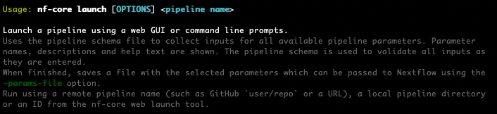

nfRNAseq

https://nf-co.re/rnaseq/3.14.0
nf-core/RNAseq the most popular nf-core pipeline.
nf-core list -s starslets use nf-core tools to build a command to run the nf-core/RNAseq pipeline
mkdir ~/workshop/nfcore
cd ~/workshop/nfcore
nf-core launch -h
nf-core launch nf-core/rnaseq- use the arrow keys to select the following parameters
- select release - version '3.14.0' selecting the release will download the pipeline, effectively running ’nextflow pull
you can see the key nextflow files are pulled to the ~/.nextflow directory, including the key executables and configs (nextflow.config, main.nf)
(exit with control+c if needed)
ls /home/workshop/.nextflow/assets/nf-core/rnaseq/This is one of many ways to pull a nf-core pipeline.
you can then select GUI or command line, with the GUI giving a URL to access via a browser by copying and pasting.

let’s continue with adding variables with nf-core launch
use the arrow keys to select the parameters to build a ‘run’ command with the selected parameters ‘Web based’
- LOTS of TEXT to FILL OUT here
- if we have time at the end can go through other pipelines in more details if anyone has specific questions
- you can exit the GUI (graphical user interphase) using **control** + **c**
1. Merge re-sequenced FastQ files (cat)
2. Sub-sample FastQ files and auto-infer strandedness (fq, Salmon)
3. Read QC (FastQC)
4. UMI extraction (UMI-tools)
5. Adapter and quality trimming (Trim Galore!)
6. Removal of genome contaminants (BBSplit)
7. Removal of ribosomal RNA (SortMeRNA)
8. Choice of multiple alignment and quantification routes:
1. STAR -> Salmon
2. STAR -> RSEM
3. HiSAT2 -> NO QUANTIFICATION
9. Sort and index alignments (SAMtools)
10. UMI-based deduplication (UMI-tools)
11. Duplicate read marking (picard MarkDuplicates)
12. Transcript assembly and quantification (StringTie)
13. Create bigWig coverage files (BEDTools, bedGraphToBigWig)
14. Extensive quality control:
1. RSeQC
2. Qualimap
3. dupRadar
4. Preseq
5. DESeq2
15. Pseudoalignment and quantification (Salmon or ‘Kallisto’; optional)
16. Present QC for raw read, alignment, gene biotype, sample similarity, and strand-specificity checks (MultiQC, R)
In this section we will work through setting up the nf-core/RNAseq pipeline. We will be chosing specific parameters and finally, going through was the output looks like.
# setting up nf-core/RNAseq
#### dataset
The dataset used throughout this workshop is as follow:- 16 Samples sequenced with an MGI400 sequencer at SAGC using the Tecan Universal RNA-seq library protocol.
- 2 different cancer cell lines (human)
- treatment vs control
- 4 replicates for each
***NOTE*** some concessions had to be made to work with this for workshop. Taking into account the large file sizes, the long run times and need for high compute resources.
#### what are the inputs to an RNAseq pipeline
# .fastq /.fastq.gz
# .fasta
# .gtf
# .bed

#### Genomic file formats
- now that we have gone through how to run the nf-core/RNAseq pipeline. Let's look at the inputs and outputs in detail.
- using this chance to describe what are the key genomic file formats used in RNAseq and beyond
- Knowing what these files are isn't only important in finding which files to use for a pipeline, but a key foundation of genomic bioinformati$
- being able to use and manipulate each file open's up many opportunities, and is often required for troubleshooting wehn something has gone w$
- many files are plain text files, this means they can be manipluated with basic text editing. I'll be going through some examples.
- For a more visual perspective, we'll also be using a genome browser, IGV (Integrative Genome Browser) to get a feel for what information eac$
# bam

# bigwig
[link to multiqc report](../multiqc_report.html)